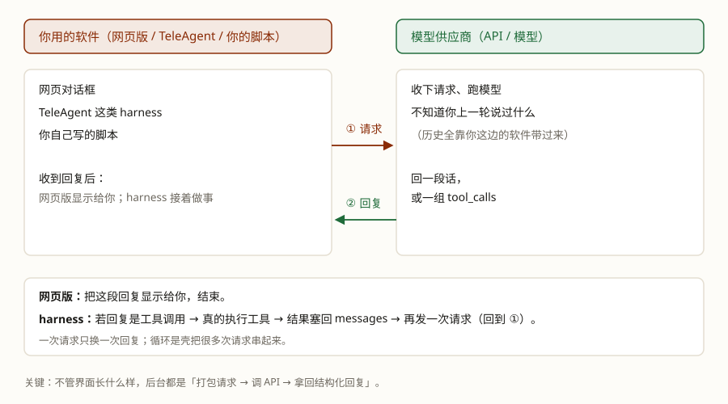

过去一年，agent 这个词你大概没少听，中文叫「智能体」。各家产品都在用：能替你订机票的，能自己写代码的。听着挺神，可真打开一看——不也是个聊天框吗？打字进去，回答出来。
差别不在模型，在模型外面那层软件。同一次「请求 → 回复」的后台，网页版的软件把回复显示给你就结束；TeleAgent 这类软件拿到回复会接着干——调工具、看结果、再发一次，把事办完才回来。这类会自己转循环的软件有正式的名字，叫 harness（壳）。
学完这课，你能：说清用 AI 和用 agent 差在哪，中间还隔着哪一档；分清模型、harness、agent 三个词；说清循环怎么转、什么时候停，工具从哪来，记忆为什么没有标准做法。
一次 API 调用＝一次请求换一次回复。agent 多出来的，就是把这些请求串成一个循环：推理 → 行动 → 观察 → 再推理，直到任务完成，或者被护栏拦下。
先看两个场景，用的是同一句话：「查明天上海到北京最便宜的机票，合适就订。」
第一个场景，你打开 ChatGPT、豆包这类网页，把话打进去。它回一段文字：建议看哪几家航司、什么时段便宜、怎么比价。然后就没有然后了——查航班、比价、付款，还是你自己来。它可能能上网搜两下，但那些本事是产品方给死的，你想添一个「订票」，添不进去。
第二个场景，你把同一句话交给 TeleAgent 这类软件，然后去倒杯水。回来时它已经查完航班（看到 23 个），自己决定只看直飞、按价格排，也比好了价，正等你一句话：「最便宜的是 620 元那班，加 20 元能选靠窗，订哪个？」你说「订 620 的」，它下单，把出票信息交给你。
两个界面几乎一样：一个输入框，打字，回话。但一件是你接着办，一件是它替你办完了。差的真是模型的脑子吗？
答案在后台。不管界面长什么样，软件干的都是同一件事：把你的输入打包成一个请求，发给模型供应商的接口（API），拿回一段回复。API 像厂商开放的受理窗口，软件照约定往里递单子、拿回结果。你以为在和模型聊天，其实是软件在替你和 API 打交道：网页版是浏览器里的软件，TeleAgent 是装在你电脑上的软件，两边跑的甚至可能是同一个模型。差别在拿到回复之后做什么。TeleAgent 这类软件会接着干活——执行工具、管上下文、装护栏，把一次问答变成一个自己转的循环——这样的软件才有正式的名字，叫壳（harness）；网页版那种拿到回复只能显示的客户端，算不上壳。

请求和回复都是结构化的数据，不是一句人话。一次请求里装着对话记录（messages）、允许模型用的工具清单（tools）、用哪个模型（model）；拿回来的回复只有两种形状——一段话，或者一组「要调哪个工具、参数是什么」的调用。写成伪代码，一次来回就这几行：
请求 = {
"model": "deepseek-flash",
"messages": [ {"role": "user", "content": "北京今天多少度？"} ],
"tools": [ ... ] # 允许模型用的工具
}
回复 = 调接口(请求) # 回复只有两种形状：一段话，或一组工具调用（字段名各家略有出入，形状就这两类。）
网页版拿到回复，显示给你，结束。壳拿到的回复却常常是第二种——一串工具调用。它照着执行，把结果塞回对话，再发一次请求。又查航班、又比价、又下单，这一连串动作是谁安排的呢？
是一个循环。模型在循环里每次只做一件事：看着对话记录，决定下一步做什么——接着查、该比价了、可以下单了，或者活干完了，说一段收尾的话。决定调工具，回复就是一串工具调用；壳执行工具，把结果塞回对话，再发一次请求。这样推理 → 行动 → 观察 → 再推理，转到模型不再要工具为止。
出口只有一个：某一次回复里，模型不再要工具，改给一段话。没有「完成」按钮，也没有一个叫 done 的动作——它不调工具了，壳就认为这轮活干完了。反过来，如果它一直要工具、一直不停，循环就停不下来。所以工程上要有 护栏，最常见的是最大步数，走满就强制停。一步就是问一次模型；一次回复里可以打包好几个工具调用，合起来算一步。
但停了不等于做对了。模型可能活没干完就说完了，也可能绕着圈反复查。这两种情况循环自己判断不了，得靠外面的检查——看执行记录、看结果，关键动作让用户确认。护栏也不止步数一种：agent 答错的代价比聊天大，聊天答错无非一句错话，agent 答错可能是真订错一张票，所以下单这类动作常配一条「先问过用户再执行」。
把循环写出来，其实就这几行：
messages = [系统提示, 用户的问题] # 系统提示＝幕后写给模型的要求，用户看不见
工具清单 = [查天气, 查航班] # 每一轮都随请求发出去
for step in range(1, 最多步数 + 1):
reply = 调用模型(messages, 工具清单) # 问一次模型 = 一步
if reply 没有要求调工具:
return reply.text # ← 循环的出口：模型用一段话收尾
messages.append(reply) # 模型说的那句，原样放回
for call in reply.工具调用:
result = 执行工具(call) # ← 壳干的活，模型只说要调
messages.append(工具结果(call.id, result))
# ↑ 结果带上编号塞回去，模型才知道对上哪一次调用
raise 超过最大步数 # 护栏：模型一直不收尾代码里还有一处值得停一下：每一轮都把全部对话记录和工具清单重新发一遍。模型自己不留状态，这轮能看到什么，全靠壳递进来。这些摊在模型眼前的记录，行话叫上下文。
再看一遍那段代码就会现出原形：转圈的不是模型。模型每轮只做一个判断——下一步做什么；执行工具、把结果塞回去、决定再发请求、走满步数强制停，全是壳的活。模型（Model）和壳（harness）就此分开：模型是只会算的零件，给它输入，它吐下一个字，自己不会挑工具、不会动手、不会记事；壳是套在模型外面的那套软件，拼提示词、递工具清单、执行工具、管上下文、装护栏——你下载安装的就是它。
第三个词 agent（智能体）指的不是软件，是壳把「模型＋工具＋循环」装好、跑起来之后，表现出的那种「自己决定下一步」的行为。口语里说「装了一个 agent」，装的其实是 harness；agent 是它跑起来的样子。壳里还装了什么、几款产品差在哪，第 7 课摆在同一张零件表上对照。
「下一步交给模型」，这就是 agent 和单次调用的分界。不过这不是全有或全无——按交出去多少，分三档：
后两档有个统称：agentic system（代理式系统），出自 Anthropic 的工程文章——只要流程里有模型参与干活就算这一类；到第三档，才算狭义的 agent。
选哪一档，判据就一句：谁安排下一步。落到手头的活，先问步骤写不写得死。写得死就用 workflow：每步固定，可预测，出了错好排查，花多少钱事先算得出；生产里的 workflow 常见五种骨架——链式、分流、并行、编排者-工作者、评估-优化——都在文末 Anthropic 那篇里。
写不死——比如要改哪些文件取决于任务本身——才轮到 agent。Anthropic 的建议（大意）是先找最简单的可行解，不够用再加复杂度，有时这意味着根本不用上 agent。代价摆在那：agent 拿延迟和成本换任务表现，一步走岔，后面每一步都建立在错的结果上。再往上一层，是一个 agent 还是一群：什么时候值得上、怎么分工，第 5 课接着讲；帮手越多风险面越大，安全面留给第 6 课。
循环是骨架，模型在循环里干活，靠三样装备。领域里常把它们画成一张地图：规划、记忆、工具——Lilian Weng 那篇《LLM Powered Autonomous Agents》提出的分法。三样装备不是挂在循环外面，而是各占一个环节：
落在推理那一步。大目标怎么拆成一步步能执行的子任务？失败了怎么改主意？
落在行动那一步。模型怎么伸出手去调 API、查库、改文件，把结果读回来？
落在观察之后。看到的结果放哪、下次还认不认得？跨会话的东西怎么存、怎么取？
模型里没有一个单独的「规划模块」。它是一个字一个字往外写的，所谓计划，也是它写出来的一段文字。订机票的任务，它会先写「先查直飞，太贵再看中转；都不合适就回来问」，再照着这段话往下做。拆任务、失败后换路，都是这类文字的内容；写出来你能看见、能改，不写出来就直接体现在动作里。
遇到错误为什么能改？因为错误先变成了观察，回到上下文里：工具报错、你说「不对」，下一轮它才可能写出不同的下一步。它不会自动知道自己错了；没有错误信号，它会沿着原来的路一直走。也因为它只是按上下文往下写，改主意不保证改对——可能反复试同一个错。所以外面的检查不能省，循环那一节说过要看什么。
壳在这里不替模型规划，但能决定计划怎么用：轻则在系统提示里要求「先出计划，别执行」，重则切到 Plan 模式，只给只读工具（细节第 7 课展开）。至于这种本事哪来的——它仍是那个预测下一个字的模型，只是把计划写进了上下文；训练上怎么来的，见 LLM 底层 · 第 5 课，不读也能走完本课。
行动那一步靠的是工具。最原始的工具，就是你在程序里写的一个普通函数：
def get_weather(city: str) -> dict:
return {"city": city, "temp_c": 26, "cond": "晴"}但模型看不见这个函数，也调不动它。你得再给它一张说明卡：名字、一句话说明、参数。
{
"name": "get_weather",
"description": "查某个城市今天的天气。返回气温（摄氏度）和天气状况。",
"parameters": {
"type": "object",
"properties": { "city": { "type": "string", "description": "城市名" } },
"required": ["city"]
}
}模型照着这张卡挑工具、填参数。卡是模型挑工具的主要依据，写得含糊，它就调得不准。
卡还有一个代价：它每一轮都随请求发出去，工具越多，每轮付的 token（模型数着计费、计长度的字词单位）越多。好在卡每次都原样排在请求开头，服务器对没变的开头会复用上次算过的结果——这套机制叫缓存，省钱也更快（拆解见 LLM 底层 · 第 3 课，不读也能走完本课）。所以工具清单别中途增删：一改，开头就变了，缓存也接不上了。
要紧的是：模型只「说要调」，不执行。它输出的是一段按约定格式写的文字——「我要调 X，参数是 Y」，行话叫 tool_use，OpenAI 那边叫 tool_calls。真正执行的，是壳里的程序；调完把结果（tool_result）塞回对话，模型才知道发生了什么。
为什么非要给它手？因为它伸手去拿的，往往是它生来没有的三样东西：现在的信息（今天的航班，模型只学到旧闻）、动手算的能力（它只会吐字）、你公司的数据（训练时没见过）。
三五个工具自己写还行；再多，麻烦就不在写函数，而在维护——换个应用、换个壳，函数、参数说明、认证、错误处理都得重新搬一遍。所以工具后来演化出两种新形态：MCP 把工具做成标准插口，写一次，任何支持的壳都能接；Skill 把「怎么做一类事」打包成文件。这两个，下一课和再下一课专门讲。
工具解决了动手，还剩一件事：干过的活、看到的结果，模型记不记得住？模型为什么会忘呢？它每来一轮，都要把上下文从头读一遍——不是「接着上次往下想」，而是每次把摊在眼前的记录重看一遍。上下文里没有的事，它就不知道。而且不用等装满才出事：上下文越长，它从里面找回信息的准确度越低——注意力就那么点，摊在越多内容上越薄。Anthropic 管这叫 context rot（上下文腐烂）。它像一个每天失忆的员工，工作台上摊着一圈便签——要紧的不是他记性好不好，是谁在替他写便签、换便签。
所以记忆分两层。短时记忆就是上下文：这一轮放了什么，会话结束就散了。长时记忆是存在外面的东西：你的偏好、上次的结论，写在文件或数据库里，用到时取回来、塞进上下文，它才「想起来」。存也好取也好，都是外面的程序在办——模型自己什么都存不了。
长时记忆没有行业标准。同一件事，四家产品的做法差得很远（按四家 2026-10-18 的文档，会变）：OpenCode 干脆不存，跨会话靠项目里的规则文件和代码库——写代码的活，状态本来就该落在文件里；TeleAgent 按来源和时间存成几份 Markdown 文件；Supermemory 把内容抽成一张带时间的记忆图，新事实更新旧的，不重要的自动遗忘；Mem0 把对话抽成一条条小事实，取回时按语义、关键词、时间几路各打一次分。四家的存、取、管各是什么样，速查里有对照表。四条路没有谁更先进：要不要跨会话、记忆要不要可读可改、过期了谁来清，用你的场景答。
该进长时记忆的，是下次还会用到、又不会过期的东西：稳定的偏好（「我住浦东」）、做过的结论、你纠正过它的话。不该进的：一次性细节、全部流水账（存了也取不准，越存越贵）、会过期的事实（今天的票价，记下来就是给将来埋雷）、敏感信息。要不要上长期记忆，动手前问自己：忘掉的那件事下次真的还用得到吗？能不能一句话补回来？存错了谁来收拾？多数场景，上下文加一句补充就够用了。
Q1 下面哪种情况是「用 agent」，不是「用 AI 对话」？
Q2 网页版和 agent 软件（harness）的后台，共同点是什么？
Q3 从网上下载、双击打开的那个软件，严格说是什么？
Q4 模型「调用工具」的时候，它到底做了什么？
Q5 模型这一次回复里没有任何工具调用，说明什么？
Q6 一个任务每次都是固定的三步：读表格 → 算汇总 → 按模板写周报。哪种结构最合适？
Q7 agent 的「短时记忆」和「长时记忆」差在哪？
前置：没有，本轨道从这一课开始；想先弄懂模型本身怎么工作，看 LLM 底层 · 第 0 课 · 模型是怎么学出来的。
顺着往下：Agent 篇 · 第 2 课 · 手写一个 agent（把这课的循环写出来跑起来）
其它轨道：LLM 底层 · 第 1 课 · 从「token」到「下一个 token」（整条流水线怎么走）· LLM 底层 · 第 3 课 · KV Cache 与「缓存命中」（工具清单为什么影响费用）· 第 7 课 · Harness（壳里装了什么）
术语表：API · Agent · Agent 循环 · Workflow · Harness · 规划 · 记忆 · 工具 · 护栏